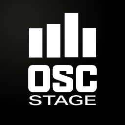

Aplicación profesional de control remoto OSC y MIDI de ultra baja latencia diseñada para músicos de directo, ingenieros de audio y creadores de contenido.
Desarrollado con pasión para la comunidad de producción musical en directo. Un agradecimiento especial a todos los colaboradores, probadores beta y a la comunidad de REAPER.